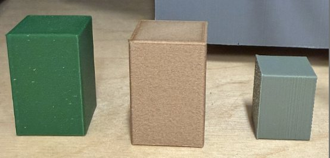
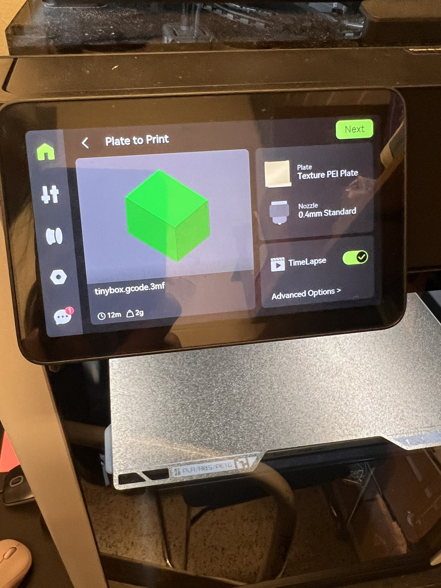
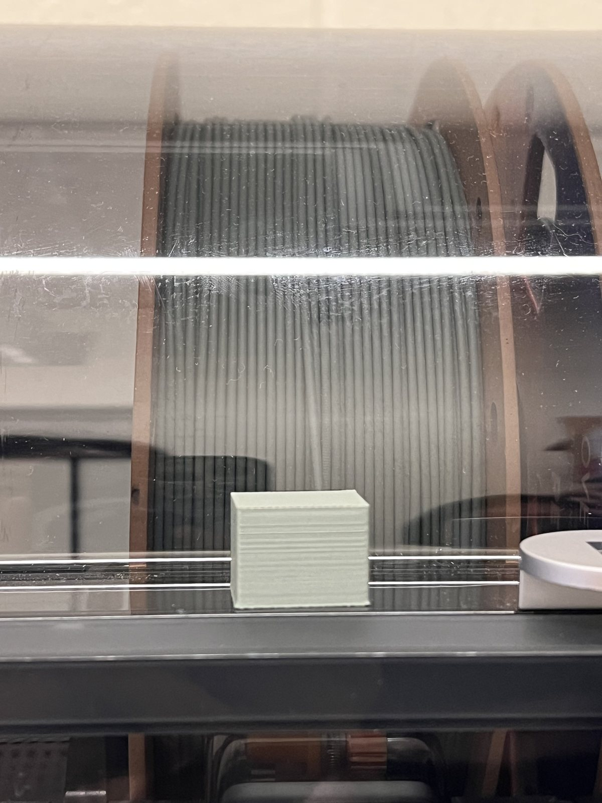

UTWind · Mechanical Subteam · Fall 2026 – present
Sustainable 3D printing
Can we 3D print turbine parts from more sustainable materials? That's what our 3D printing group is figuring out this year.
- My part
- Print-setting development, test prints
- Team
- 3D printing group, with the Sustainability subteam
- Tools
- Bambu Lab H2S, Prusa MK4S and i3. Algae PLA, wood PLA, biodegradable filament, rPET (next)
- Status
- In progress. Tensile testing is next.
The goal
This September I joined the 3D printing group on the mechanical subteam. Our job is to test materials we could 3D print turbine parts from, and find out how sustainable each one really is. In the past, the team has mostly printed with wood PLA and recycled PET.
One cool initiative UTWind runs is our Recycled PET Program. The team collects plastic bottles around campus, breaks them down, and runs them through a filament maker to turn them into recycled PET (rPET) filament. Then we use it to print parts for the turbine. This year, we're hoping to bring even more 3D-printed parts into the build.
Getting them to print
After our Sustainability subteam researched the options, we picked four filaments to test: algae-based PLA, wood-based PLA, a biodegradable filament, and recycled PET. I worked on getting the print settings right, then printed small test cubes to check that they actually print well. Three are dialed in so far. rPET is next, once we get our filament maker running again.
My approach was to start from a standard PLA profile on our Bambu Lab H2S (0.4 mm nozzle, 0.20 mm layers, textured PEI plate) and only change the nozzle and bed temperatures, using each manufacturer's recommended range as a starting point. Changing one thing at a time meant that when a print worked, I knew why.
| Material | Nozzle first layer → rest | Bed first layer → rest |
|---|---|---|
| Algae PLA | 205 → 195 °C | 50 → 40 °C |
| Wood PLA | 230 → 220 °C | 70 → 60 °C |
| Biodegradable | 205 → 195 °C | 50 → 40 °C |
Tap each cube to meet the material

Algae PLA
PLA blended with algae. It printed best at cooler temperatures than the wood: 205 °C for the first layer, then 195 °C.
Wood PLA
PLA mixed with wood fibres, which gives it that speckled, wood-like finish. It needed the hottest nozzle of the three. Wood fibres are also rough on regular nozzles, so a hardened steel one is next on our list.
Biodegradable filament
The same temperatures as the algae PLA worked here too. It soaks up moisture, so it lives sealed with desiccant, and gets dried at 55 °C for 6 hours if it starts stringing.


What's ahead
Yay, printing is a success! Now we need to make sure these materials actually work for what we want to make.
- NextPrinting a real part. After test cubes, we'll print a wind speed sensor holder from last year's turbine assembly, to see how each material handles an actual part.
- NovemberTensile testing. We'll print dog-bone samples, the standard shape for tensile tests, and pull them apart to measure how strong and stretchy each material is.
- This fallPicking our materials. With the Sustainability subteam, we'll weigh test results against how sustainable each filament really is.
- WinterPrinting for the turbine. When manufacturing season starts, our group will print parts for the other subteams, from aerodynamics to mechanical to controls.
Also on my list:
- Fix our Prusa i3. Its nozzle heater needs replacing and testing.
- Upgrade the Prusa MK4S to a hardened steel nozzle for wood PLA.
- Get the rPET filament maker running again, troubleshooting it so we can make our own filament.
What I'm learning
Working with 3D printers has been really fun. It's not your traditional power tools! I've learned a lot just from troubleshooting. When a print doesn't come out right, you look closely, change one thing, and try again.
I'm most excited for the tensile testing. Testing materials is a huge part of industry work, and getting to practise it with real standards this early is going to be really cool.